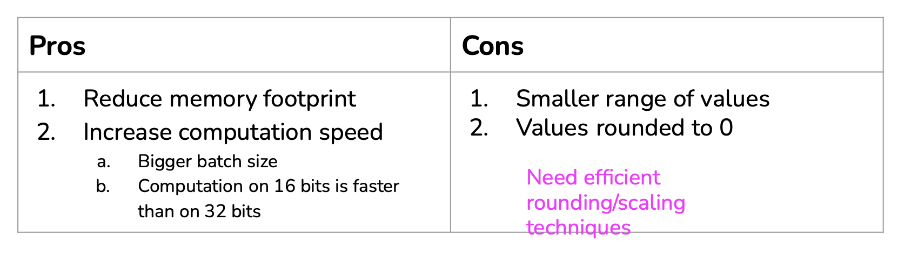

Training and Inference pipeline example
Different architectures exist: using API, databases or brokers:
Online prediction
To perform online prediction, an ML system requires two key elements:
- Near real-time data pipeline,
- High model inference speed,
- Compiling.
Stream processing
Stream processing is a concept that enables us to build ML systems (pipelines) that can respond in real-time and near real-time.
Example of ride-sharing (Uber) service
A ride-sharing application is composed of 3 parts that need to exchange data:
Different architectures exist: using API, databases or brokers:
Real-Time Transport: Service Broker
A Broker or Service Broker implements native in-database asynchronous message processing functionalities. It monitors the completion of tasks, usually command messages, between two different applications in the database engine. It is responsible for the safe delivery of messages from one end to another.
When two applications (within or outside of SQL Server) communicate, neither can access the technical details at the opposite end. It is the job of Service Broker to protect sensitive messages and reliably deliver them to the designated location. Service Broker is highly integrated and provides a simple Transact-SQL interface for sending and receiving messages, combined with a set of strong guarantees for message delivery and processing.
A broker is a real-time transport solution.
- Any service can publish to a stream [producer],
- Any service can subscribe to a stream to get info they need [consumer].
Request driven vs Event driven
- Request driven processes send requests,
- Event driven processes send informations.
Code example using Kafka
Example of real-time transport Solutions
Resources
See:
Batch processing vs. stream processing
Batch prediction vs. online prediction
Here is a comparison of both methods:
Batch prediction
Online prediction
HTTP protocol:
Streaming:
Unified
Cloud computing vs. Edge computing
Cloud computing means a large chunk of computation is done on the cloud, either public clouds or private clouds.
Edge computing means a large chunk of computation is done on the consumer devices
Edge computing
Benefits:
- Can work without (Internet) connections or with unreliable connections:
- Many companies have strict no-Internet policy,
- Caveat: devices are capable of doing computations but apps need external information:
- e.g. ETA needs external real-time traffic information to work well,
- Don’t have to worry about network latency:
- Network latency might be a bigger problem than inference latency,
- Many use cases are impossible with network latency:
- Fewer concerns about privacy:
- Don’t have to send user data over networks (which can be intercepted),
- Cloud database breaches can affect many people,
- Easier to comply with regulations (e.g. GDPR),
- Caveat: edge computing might make it easier to steal user data by just taking the device,
- Cheaper:
- The more computations we can push to the edge, the less we have to pay for servers.
Challenges of ML on the edge:
- Device not powerful enough to run models:
- Energy constraint,
- Computational power constraint,
- Memory constraint.
Solutions:
- Hardware: Make hardware more powerful,
- Model compression: Make models smaller,
- Model optimization: Make models faster.
Hybrid
- Common predictions are precomputed and stored on device,
- Local data centers: e.g. each warehouse has its own server rack,
- Predictions are generated on cloud and cached on device.
Model optimization
Solution to speed up model inference:
- Quantization
- Knowledge distillation
- Pruning
- Low-ranked factorization
Quantization
Reduces the size of a model by using fewer bits to represent parameter values:
- E.g. half-precision (16-bit) or integer (8-bit) instead of full-precision (32-bit)
- 1-bit representation: BinaryConnect, Xnor-Net

Quantization in PyTorch:
Post-training quantization:
Knowledge distillation
Train a small model (“student”) to mimic the results of a larger model (“teacher”):
- Teacher & student can be trained at the same time,
- E.g. DistillBERT, reduces size of BERT by 40%, and increases inference speed by 60%, while retaining 97% language understanding.
Pros:
- Fast to train student network if teacher is pre-trained,
- Teacher and student can be completely different architectures.
Cons:
- If teacher is not pre-trained, may need more data & time to first train teacher,
- Sensitive to applications and model architectures.
Pruning
- Originally used for decision trees to remove uncritical sections,
- Neural networks: reducing over-parameterization.
- Remove nodes,
- Find least useful params & set to 0:
- Number of params remains the same,
- Reducing number of non-zero params,
- Makes models more sparse:
- Lower memory footprint,
- Increased inference speed.
Low-ranked factorization
Compiling
Framework developers tend to focus on providing support to only a handful of server-class hardware, and hardware vendors tend to offer their own kernel libraries for a narrow range of frameworks. Deploying ML models to new hardware requires significant manual effort.
Instead of targeting new compilers and libraries for every new hardware backend, what if we create a middle man to bridge frameworks and platforms? Framework developers will no longer have to support every type of hardware, only need to translate their framework code into this middle man. Hardware vendors can then support one middle man instead of multiple frameworks.
This type of “middle man” is called an intermediate representation (IR). IRs lie at the core of how compilers work. This process is also called “lowering”, as in you “lower” your high-level framework code into low-level hardware-native code.
Examples of CPU, GPU and TPU
The compute primitive of CPUs used to be a number (scalar), the compute primitive of GPUs used to be a one-dimensional vector, whereas the compute primitive of TPUs is a two-dimensional vector (tensor). Performing a convolution operator will be very different with 1-dimensional vectors compared to 2-dimensional vectors. You’d need to take this into account to use them efficiently.
ML in browsers
It is possible to generate code that can run on just any hardware backends by running that code in browsers. If you can run your model in a browser, you can run your model on any device that supports browsers: Macbooks, Chromebooks, iPhones, Android phones, and more. You wouldn’t need to care what chips those devices use. If Apple decides to switch from Intel chips to ARM chips, it’s not your problem.
JavaScript:
- Tools exist to help you compile your models into JavaScript, such as TensorFlow.js, Synaptic, and brain.js,
- JavaScript is slow, and its capacity as a programming language is limited for complex logics such as extracting features from data.
WebAssembly (WASM):
- Open standard that allows running executable programs in browsers,
- Performant, easy to use, has an ecosystem that is growing,
- Supported by 93% of devices worldwide,
- Still slower than running code natively on devices (but faster than JavaScript).
Resources
See: